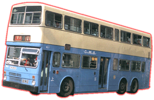
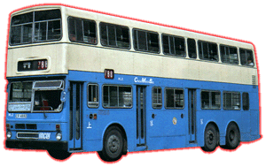
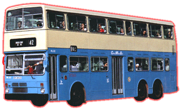

Metro-Cammell Weymann
Super
Metrobus 12 Metre


 |
車隊編號 Model
引擎 Engine
容積 Engine Capacity
波箱 Gearbox
車身 Body Build
體積 Volume
載客量 Passenger
服役年份 Year |
: ML 1 - 84
: Gardner 6LXCT (210bhp)
: 10.45 Litres
: Voith DIWA851 (3-Speed Automatic)
: Metro-Cammell Weymann
: 11990L X 2500W X 4430H(mm)
: U75 L33 S63 [ML 1] U75 L33 S61 [ML 2] U75 L33 S60 [ML 3 - 84]
: 1981 - 2000 |
都城嘉慕[MCW] 12m 雙層三軸巴士，於 81 年由中巴率先登記。ML1能夠載著最多 171 位乘客在路上奔馳，一度成為香港記錄。ML2 亦成為香港第一部有三車門巴士， 也是中巴唯一一部這種款式，可能巴士廠商覺得車箱長關係，落車門有兩隻會比較方便乘客，但這點並未有吸引到中巴，及後所引入的 ML 都回復上落各一車門設計。最初新巴士都 被派到行走過海線作試驗，中巴對其性能相當滿意，所以正當九記測試其他牌子廠巴士之際，中巴已經向 MCW 訂購 42 部新車，以舒緩過海線壓力。隨著過海線增加和港島南區發展，中巴再訂購多 40 部新車以作應付。MCW 12m 三軸巴士主力服務過海線和港島南區線，後來空調巴士引入和南區線失守給城巴，ML 都被調到東區小西灣和耀東行走，代替 XF 和 LF 繼續服務港島區。後來中巴失去專利權，全數 ML 過檔新巴，將士被用到 2000 年便作告一段落，有數部生還者被賣到澳洲去，易地而戰！